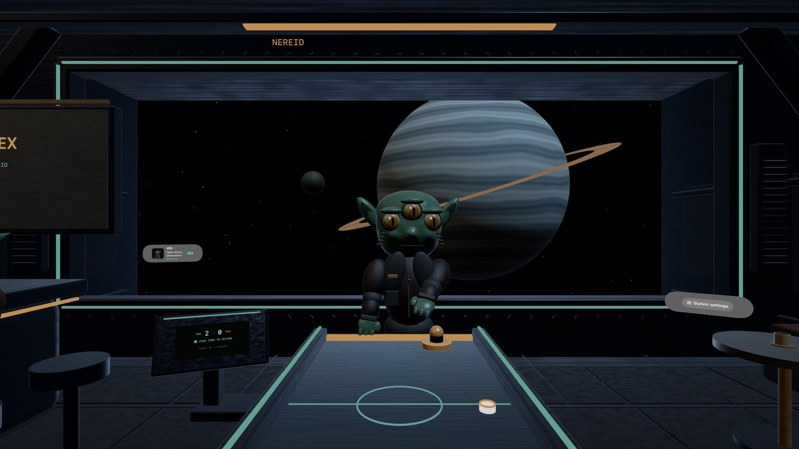

Spatial puck showdown · Apple Vision Pro
One table. Nine opponents.
Step into an immersive space café. Open the airlock, choose your opponent and score seven points to win the match.
Native single-player visionOS game · French and English interface


A world for each of them
Nine worlds, nine personalities.
From Gloop to Ace-X, every opponent brings a different difficulty, world and musical atmosphere.
A paddle in your hand.
Guide the paddle with your right hand, or look at the turquoise paddle and pinch to move it.
A café at your pace.
Adjust the table height, recenter the controls and pause the match. An automatic demo is also available.